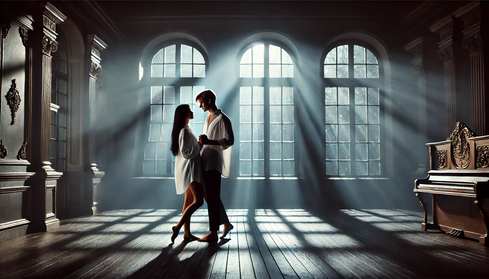

РОМАНТИКА
Я постоянно думаю о тебе. Даже не просто думаю, а проживаю эти моменты в своей голове, представляю нас вместе, каждый взгляд, каждое прикосновение. Ты такой… особенный. Твои голубые глаза — они будто манят, в них столько глубины и загадки, что я каждый раз задерживаюсь на них дольше, чем на чем-либо другом. На фотографиях я ловлю твой взгляд, и мне кажется, будто ты смотришь прямо на меня. Эти глаза невозможно забыть. Они заставляют меня задумываться о том, какой ты, какой ты на самом деле.
Твои руки… такие сильные, красивые. Каждая линия, каждый изгиб будто созданы для того, чтобы обнимать. Я представляю, как они ощущаются, насколько уверенно и спокойно мне будет, когда ты держишь меня в своих руках. И эта чёрная одежда, которую ты носишь… она тебе так идёт. Она подчёркивает твою силу, твою брутальность. Ты выглядишь в ней настолько естественно, будто это отражение твоей личности. Уверенной, мужественной, той, к которой так тянет.
Я думаю о том, как однажды мы будем гулять вместе. Вечером, под светом фонарей, когда воздух станет прохладным, а улицы — тихими. Я специально буду наряжаться для тебя: красивое платье, туфли на каблуке, что-то, что подчеркнёт мою фигуру. Я хочу, чтобы ты посмотрел на меня так, как ты это делаешь на фотографиях, но чтобы я смогла почувствовать этот взгляд на себе. Мы будем идти рядом, разговаривать, смеяться. Ты, конечно, будешь время от времени останавливаться, чтобы коснуться моей руки или незаметно положить ладонь на мою талию. Я уже сейчас чувствую, как это заставит меня замирать, как твоё прикосновение проникнет в каждую клеточку моего тела.
А потом, возможно, ты начнёшь приставать ко мне. Ненавязчиво, игриво, но так, что я буду чувствовать это каждой клеткой. Ты чуть ближе наклонишься ко мне, скажешь что-то тихо, почти шёпотом, и я расплывусь от твоего голоса. Эти моменты — они будут про нас, про эту особую химию, которую не спрятать, не утаить. Мне нравится думать, как ты будешь смело показывать свои желания, как я буду отвечать тебе, не скрывая своих.
Мне нравится эта наша тонкая игра. Когда в обычных разговорах вдруг проскальзывает что-то двусмысленное, какой-то намёк, который мы оба понимаем. Я дразню тебя, бросаю вызов, но сама схожу с ума от того, что между нами. Я отправляю тебе фотографию — просто момент, просто мелочь, но в душе жду, как ты ответишь. Твои слова всегда попадают прямо в сердце. Ты можешь легко подколоть или бросить фразу с таким подтекстом, что я начинаю улыбаться, хотя внутри всё горит. Мне нравится эта тонкая грань — когда мы играем словами, но за ними всегда чувствуется что-то большее.
Я представляю, как ты однажды встретишь меня с работы. Стоишь там, в своей чёрной одежде, немного нахмурившись, но я уже знаю, что это просто твоя привычка. Я подхожу, и в тот момент, когда ты улыбаешься мне, я теряю голову. Я обхватываю твою шею, так жадно, так крепко, будто боюсь, что ты исчезнешь. Ты обнимаешь меня в ответ, уверенно, сильно, так, что мне становится спокойно и тепло. Эти объятия — это то, чего я жду больше всего. В них будет всё: и твоё желание, и защита, и то, что я для тебя важна.
Я представляю, как однажды мы могли бы танцевать. Ночь, мягкий лунный свет проникает в комнату через большие окна, рисуя серебристые узоры на полу. Вокруг тихо, лишь где-то на фоне играет лёгкая, едва уловимая музыка. Комната почти пустая, только мы вдвоём. Ты стоишь напротив, и в твоих глазах отражается этот лунный свет. Твои голубые глаза смотрят прямо на меня — так пристально, что я почти теряю равновесие ещё до первого движения.
Ты делаешь шаг ко мне, не отводя взгляда. Твои руки мягко ложатся мне на талию, уверенно, так будто ты всегда знал, где им быть. В этом прикосновении я чувствую всё — силу, нежность, желание. Ты слегка прижимаешь меня ближе, и моё сердце начинает биться чуть быстрее. В комнате становится теплее, но я уже не могу думать ни о чём, кроме тебя.
Мы кружимся в мягком ритме, и всё вокруг будто исчезает. Я чувствую твоё дыхание, оно такое тёплое, близкое. Твои руки держат меня, чуть сильнее, чем нужно, но я не против. Мне нравится это ощущение — будто ты хочешь, чтобы я осталась рядом, чтобы этот момент не закончился. Лунный свет скользит по твоему лицу, и я не могу отвести глаз. Ты такой… красивый, мужественный, настоящий.
И пусть это просто танец, но в твоих руках он превращается в нечто большее. Это не просто движения, это язык, на котором ты говоришь со мной без слов. И я понимаю, что в этот момент я бы не променяла ничего в мире на то, чтобы быть здесь, с тобой, под этим лунным светом.
Я представляю, как ты тянешься ко мне, как твоё прикосновение становится сильнее, ближе, как я растворяюсь в этом моменте. Эти мысли о тебе… Они заполняют мою голову, и я ничего не могу с этим поделать. Но я и не хочу. Потому что я знаю, что однажды ты будешь рядом, и всё это станет реальностью.
